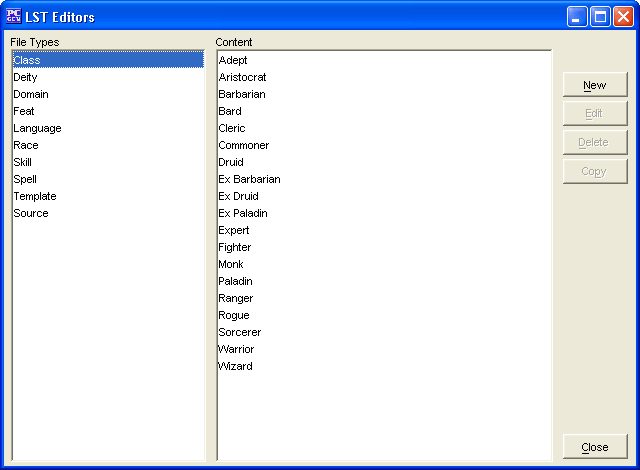

The Class Editor is to used to create/edit your own Classes.

The New button opens the New Class window with the Base Tab displayed.
The Edit button will allow you to edit the selected Class (Classes created within this Class Editor only at this stage).
The Delete button will remove the selected Class (Classes created within this Class Editor only at this stage).
The Copy button makes a copy of a selected Class. In this way you can slightly modify an existing class and give it a new name.
The Close button will allow you to exit back to PCGen.
Classes added will be saved into the customClasses.lst file.